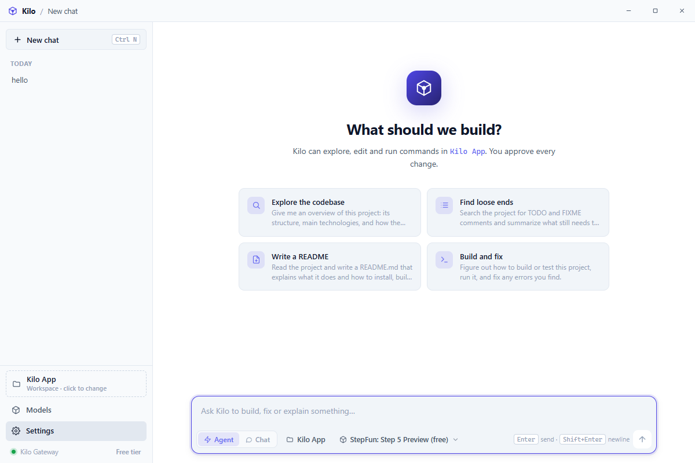

Your project, built by Kilo
A fast, native Windows desktop client for the Kilo Gateway. Chat with KiloCode Free models and let Kilo read, edit and run code in your own project folder — no browser, no Electron, no subscription.

An agent that actually edits your code
Point Kilo at a folder and it works like a coding partner: it explores, makes focused changes and verifies its own work.
Works in your folder
Open a project and Kilo reads and writes real files, with every path confined to the workspace you chose.
Runs commands
Builds, tests, linters, git and package managers — executed non-interactively in PowerShell or sh, with cancellable timeouts.
You stay in control
Reads run freely; writes and commands ask first. Approve each action, or enable auto-approve per category.
Streaming replies
Tokens stream in as they are produced, with visible reasoning and live tool-call cards showing exactly what ran.
Diff review
Every edit renders as a colour-coded diff, and a changed-files list tracks what the agent touched.
Eight themes
Dark, light, system and six colour themes, each with matching syntax highlighting and chat history.
Native & small
Built with Tauri and the system WebView2 — a 17 MB app instead of a bundled browser, starting in well under a second.
Optional API key
Use the free tier anonymously, or add a Kilo API key for higher limits. The key is validated and stored locally.
Install in a minute
Grab the installer, or build it from source if you prefer.
-
Download the installer
Grab the latest
Kilo App 1.0.2setup from the releases page. It installs per-user, so no admin rights are needed. -
Launch Kilo
Kilo connects to the Kilo Gateway straight away using the free tier — no account required to start chatting.
-
Open a project folder
Click Open folder to give Kilo a workspace. From then on it can read, search, edit and run commands there.
-
Ask for a change
Describe what you want. Kilo explores the code, proposes edits, and asks for approval before writing or running anything.
Or build from source
# prerequisites: Node 18+, Rust 1.90+, WebView2 (preinstalled on Win 11)
git clone https://github.com/ahpah-dev/Kilo-App.git
cd kilo-app
npm install
npm run tauri build
# the installer lands in:
src-tauri/target/release/bundle/nsis/
Free models, no billing surprises
The gateway exposes free models tagged :free. Kilo discovers them live and marks them clearly.
Model availability changes over time — Kilo always shows the live list from the gateway.
About
What Kilo App is, and what it is built on.
Kilo App is an independent, community-built desktop client for the Kilo Gateway, an OpenAI-compatible API. Rather than wrapping a web page, it talks to the gateway directly and runs your conversations in a native window — so it starts in well under a second and keeps conversations and settings on your own machine.
It began as a way to use KiloCode Free models from a proper desktop app: you get an agent that reads, searches, edits and runs code inside a folder you choose, with an approval step in front of anything that writes or executes.
The interface is Vue 3 and TypeScript rendered in the system WebView2; the gateway client, streaming and all file and shell tooling are Rust. It is released into the public domain, so you are free to fork it, rebrand it or ship your own build.
- Version
- 1.0.2
- Platform
- Windows 10/11 · x64 (WebView2 runtime)
- Built with
- Tauri 2 · Rust · Vue 3 · TypeScript
- Gateway
https://api.kilo.ai/api/gateway- Install size
- ~17 MB application · ~4.7 MB download
- Licence
- Unlicense — public domain
- Source code
- github.com/ahpah-dev/Kilo-App